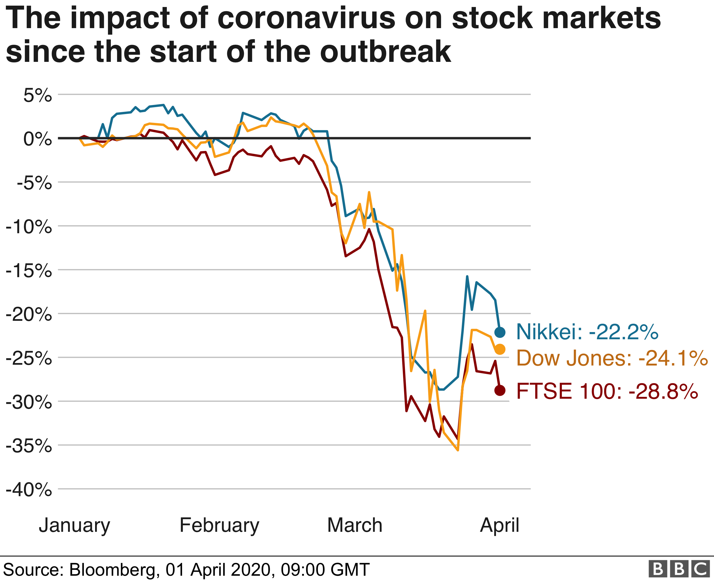
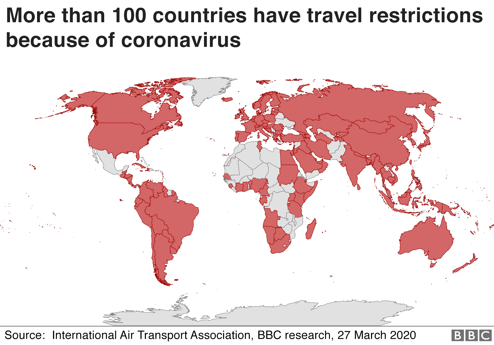
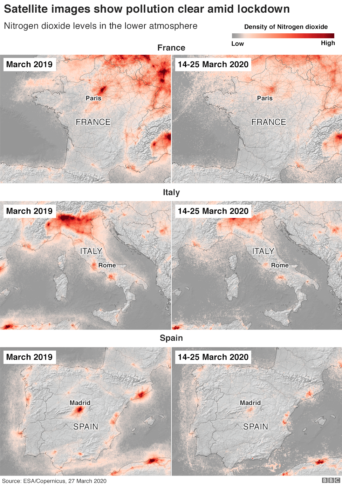
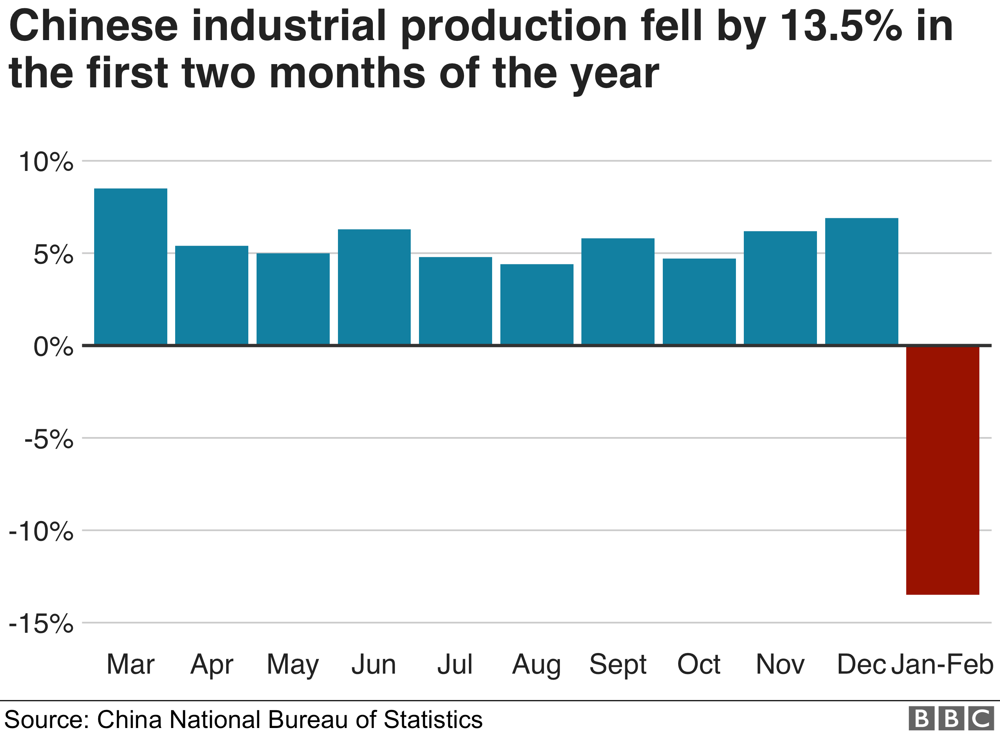
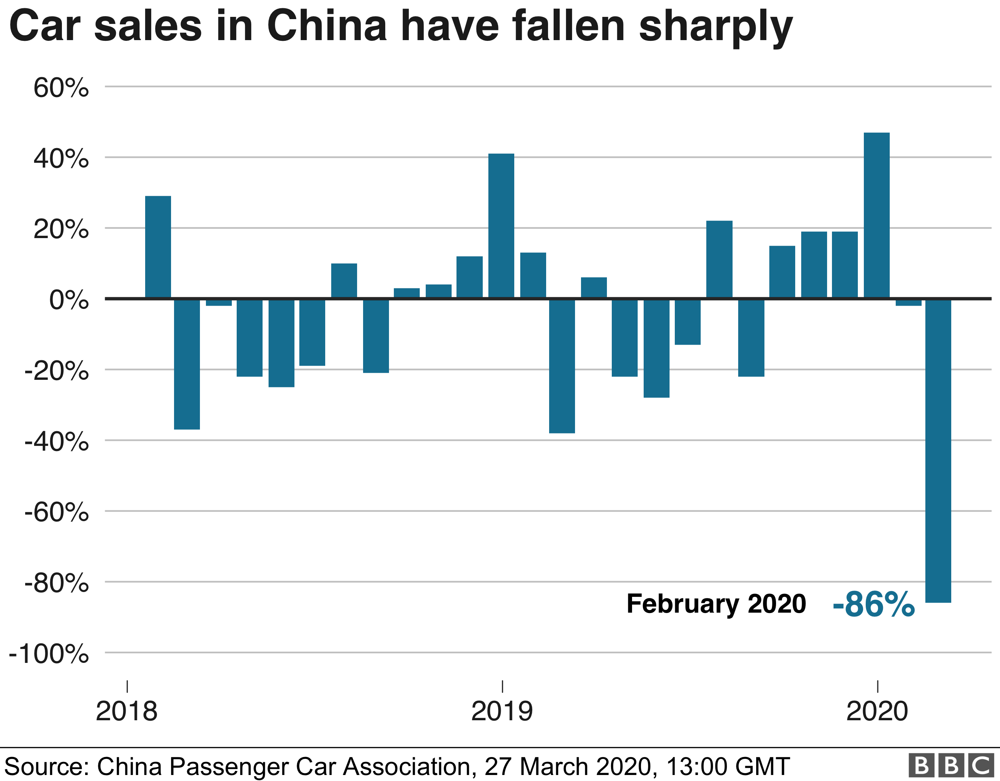
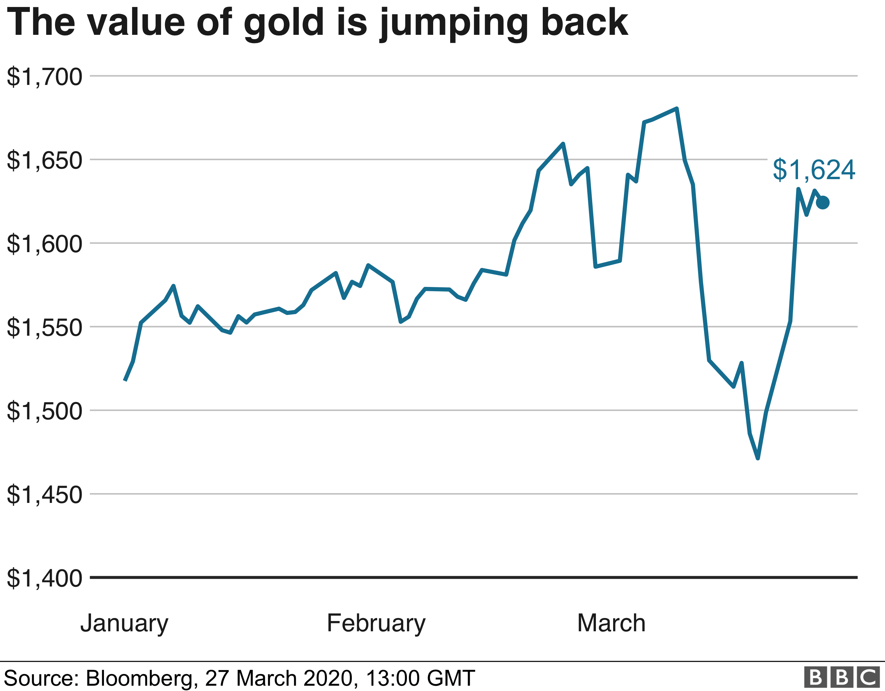
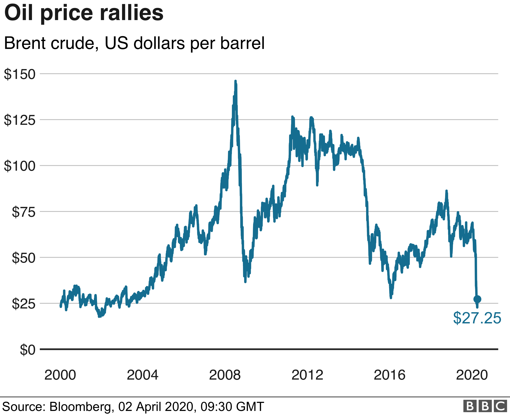
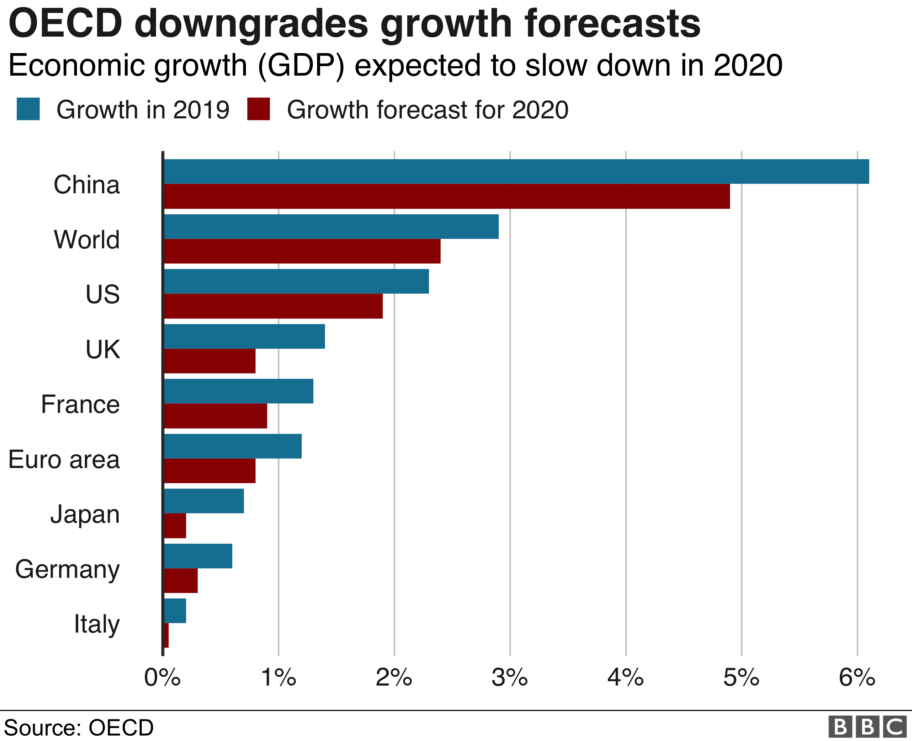

Half the world’s population, about four billion people, is currently subject to some form of mandated social distancing. Most Western European countries have implemented various types of national lockdowns. State and local governments in the US have issued strict shelter-in-place or stay-at-home orders requiring nonessential business to close and residents to avoid leaving their homes unless necessary. While a number of countries have announced extensions of social-distancing measures, several European governments—Italy, Denmark and Norway—are preparing to ease restrictions as infection and fatality curves have flattened in recent days.
The sizeable economic effects of the pandemic are becoming apparent. Data from China indicates the virus resulted in a 20% GDP decline in the first two months of 2020; other countries forced to implement aggressive social distancing will likely experience similar effects. In the US, over 10 million American workers filed for unemployment in the last two weeks of March. Economists estimate the country’s unemployment rate is currently at 10% and could rise to 15% later this year.

Investors fear the spread of the coronavirus will destroy economic growth and that government action may not be enough to stop the decline.
The travel industry has been badly damaged, with airlines cutting flights and tourists cancelling business trips and holidays.
Governments around the world have introduced travel restrictions to try to contain the virus.

The EU banned travellers from outside the bloc for 30 days in an unprecedented move to seal its borders because of the coronavirus crisis.
In the US, the Trump administration has banned travellers from European airports from entering the US.
In order to stop the spread of the Covid-19 outbreak, many countries across the world have started implementing very tough measures. Countries and world capital have been put under strict lockdown, bringing a total halt to major industrial production chains.
The European Space Agency has registered an impressive fall in pollution across the European skies.

In China, where the coronavirus first appeared, industrial production, sales and investment all fell in the first two months of the year, compared with the same period in 2019.

Restrictions have affected the supply chains of big companies such as industrial equipment manufacturer JCB and carmaker Nissan.
Shops and car dealerships have all reported a fall in demand.
Chinese car sales, for example, dropped by 86% in February. More carmakers, like Tesla or Geely, are now selling cars online as customers stay away from showrooms.

Gold is traditionally considered a "safe haven" for investment in times of uncertainty.
But even the price of gold tumbled briefly in March, as investors were fearful about a global recession.

Likewise, oil has slumped to to prices not seen since June 2001.
Investors fear that the global spread of the virus will further hit the global economy and demand for oil.
The oil price had already been affected by a row between Opec, the group of oil producers, and Russia. Covid-19 has driven the price down further.

If the economy is growing, that generally means more wealth and more new jobs.
It's measured by looking at the percentage change in gross domestic product, or the value of goods and services produced, typically over three months or a year.
The world's economy could grow at its slowest rate since 2009 this year due to the coronavirus outbreak, according to the Organisation for Economic Cooperation and Development (OECD).

The think tank has forecast growth of just 2.4% in 2020, down from 2.9% in November.
It also said that a "longer lasting and more intensive" outbreak could halve growth to 1.5% in 2020 as factories suspend their activity and workers stay at home to try to contain the virus.